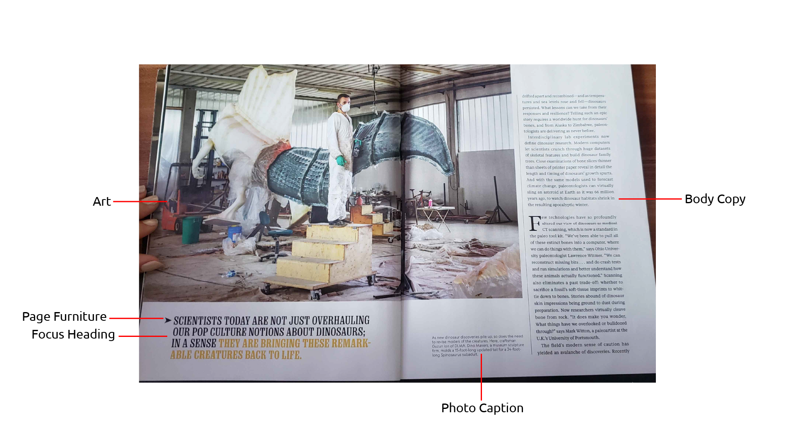
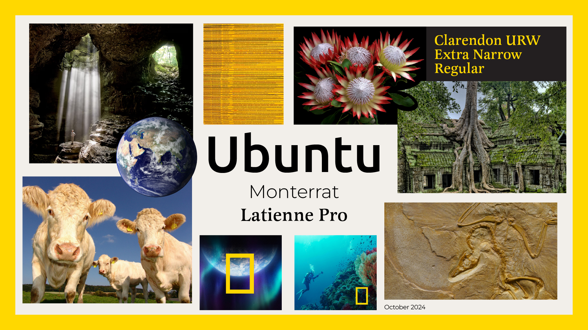
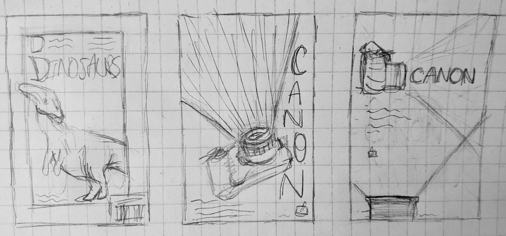
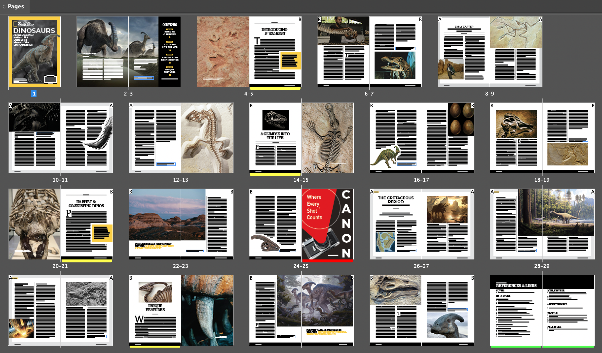
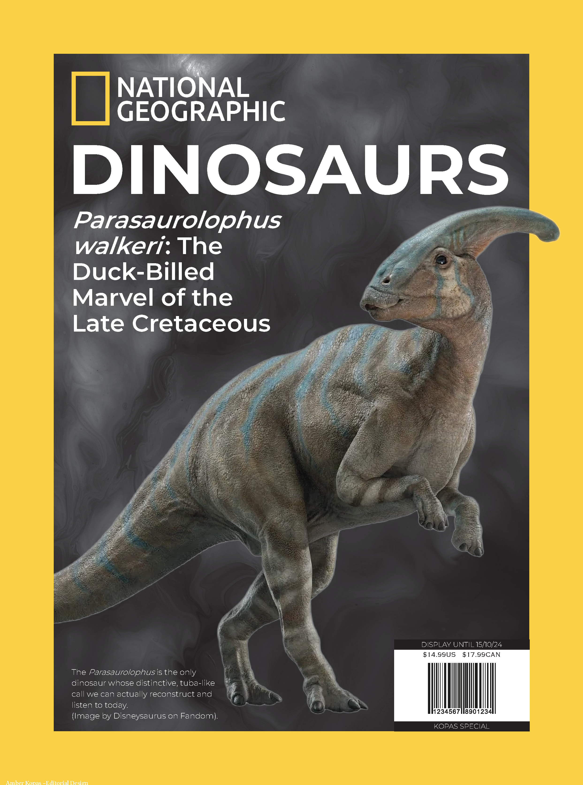

The goal of this project was to choose an existing magazine, and build my own edition. The challenge was how to effectively create an editorial/magazine, and build InDesign skills. The strategy used was to first explore magazine shops, like Shoppers Drug Mart, and pick a magazine that I enjoyed both design and content wise.
Since I have written a paper about the dinosaur Parasaurolophus walkeri, I decided to use my own written paper in this magazine! After marking up the magazine specifications and researching the National Geographic brand, I noted all important measurements and created a moodboard with the typefaces, colour palette, assets, and what images should be used. The takeaway of this finished magazine was how much attention to detail and type specifications and rules are important and can change the mood of the page. Such as using a sans-serif typeface for chapter pages, and a serif typeface for the fill-over pages.